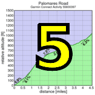
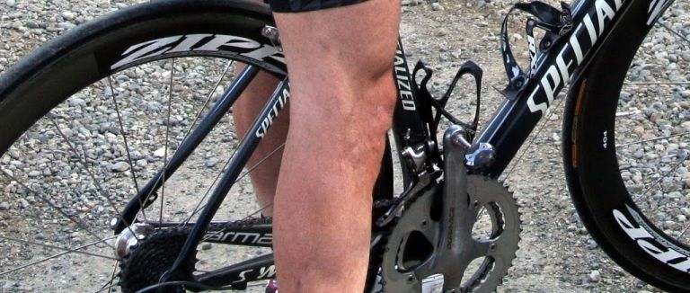

|  |  |
 |
|  |
| Real men ride 130 mm BCD cranks (Cara Coburn) |
Week 6 of the 2011 Low-Key Hillclimbs was a week for conquering new territory.
For the first time, Low-Key ventured east of the Bay area, to Vacaville. It wasn't a trip taken arbitrarily. We were there for a reason. We were there to tackle arguably the most challenging continuous climb this side of the Eastern Sierra. We were there for Mix Canyon Road.
To increase the attraction we added an encore: nearby Gates Canyon Road, while providing less total climbing than Mix, nevertheless delivers some truly inhumane grades, steeper even in places than what Mix offers. The two climbs add up to the Diabolical Duo Strava Challege, a one-two combination only the truly twisted would accept, we anticipated. But the truly twisted are in no small supply here, and we had plenty of takers. Gates Canyon, however, wasn't the focus for today. The focus was on Mix Canyon.
Last week summer finally ended in Low-Key Land. But Saturday morning provided a gap in the rain, so while the air was cool at least it was dry. 55 riders thus, voluntarily, delivered themselves to these outskirts of Vacaville, delivered them to Mount Vaca which guaranteed so much pain.
I mentioned to coordinator Barry how this climb didn't seem to have that much more steepness than week 4. A pause, a knowing smile, and "you'll see..."
At the start, results coordinate Howard hit the car horn to mark the start. Bill Bushnell in his hybrid-electric super-bike, was gone, setting his own tempo. For the rest of us the pace at the head of the pack was brisk, for sure, but certainly not super-fast. Who could blame us? Few of us really knew what awaited. Every pedal stroke took us close to depths of pain we couldn't predict.
But then: a sharp attack up the left side of the roadway. Robert Pasc... I mean Emilio Barzini shot up the road. All eyes turned to Phipps: Chris Phipps, the super-favorite, so far undefeated in Low-Key Hillclimbs, would surely respond. But Chris kept a steady tempo. Emilio Barzini? Surely we'd be seeing him again soon enough.
But "Emilio" was gone, to be seen again only at the finish. Soon after Emilio's departure, the road began to steepen, fracturing the group. Chris Phipps led the chase with Carl Nielson following.
After the road steeped even further, we hit the chalk mark coordinator Barry had placed earlier in the morning to mark the beginning of the "steep" portion. What we'd just been through had simply been the preview.
You had to laugh when the road shown on the week 6 description page came into view. Absurdly tight switchbacks at an absurdly steep grade. And when they were done, the road straighted, but remained steep.
Finally relief: a switchback. The end of the steep climbing, perhaps? A photographer in the corner...
No, silly people. The final run to the finish. Steeper even than what preceded. So cruel... so cruel....
But like all climbs, this one eventually came to an end. And as riders arrived at the finish mostly solo, occasionally in groups of two only, you could see the mixture of trauma and relief on their faces. The climb had taken its toll...
We had two women this week: Janet Martinez and Holly Harris. Both women rode well, scoring well above 100 points.
One thing you can predict at Low-Keys: the steeper the climb, the more likely it is to attract Gary "The" Gellin, a fast climber on the bike but not much slower on foot. Gary, this year fresh off his excellent result in a 100-mile trail race, finished an impressive 33rd place in a field of strong climbers, averaging 8:13 miles all the way. Gary really came into his own as the road got steeper, falling to the back of the field at the start but picking off riders one by one approaching the top.
Another, unintentional runner: Andy Crews' chain broke, and he tossed off his shoes and ran the rest of the way to the summit in his socks, still finishing well.
Enormous thanks to coordinator Barry and to our volunteers today for making this road-trip climb come off so well! Barry's special efforts to mark the course, and his special prizes for finishers were super-appreciated by all. It's a bit cliched, but surely everyone who finished today's climb felt justifiable pride in their accomplishment. It's the selfless work of the coordinators and volunteers which makes this possible.
Strava T-shirt qualifiers indicated with orange background.
| pl | # | name | team | cat | time | mph | fph | score |
|---|---|---|---|---|---|---|---|---|
| 1 | 6 | Bill Bushnell | Low-Key | Its All About The Bike | 19:30 | 15.11 | 6945 | 115.82 |
| pl | # | name | team | cat | time | mph | fph | score |
|---|---|---|---|---|---|---|---|---|
| 1 | 600 | Emilio Barzini | Rush Racing/Reparto Corsa | U25 | 27:56 | 10.55 | 4848 | 130.73 |
| 2 | 424 | Chris Phipps | Western Wheelers | 1 | 29:01 | 10.15 | 4667 | 125.85 |
| 3 | 248 | Carl Nielson | Sr's & Mr's of No Mercy | M50+ | 29:20 | 10.04 | 4617 | 124.49 |
| 4 | 1 | Daniel Connelly | Low-Key | 3 | 30:08 | 9.78 | 4494 | 121.18 |
| 5 | 404 | Jacob Berkman | Dolce Vita Cycling | 30+ | 30:53 | 9.54 | 4385 | 118.24 |
| 6 | 33 | Bill Brier | Team Fremont FFBC p/b Chipotle | 45+ | 31:18 | 9.41 | 4327 | 116.67 |
| 7 | 114 | Steve Peck | Western Wheelers | 45+ | 31:44 | 9.28 | 4267 | 115.07 |
| 8 | 510 | Clark Foy | San Jose Bike Club | 45+ | 31:49 | 9.26 | 4256 | 114.77 |
| 9 | 44 | Tim Clark | Low-Key | 40+ | 31:52 | 9.24 | 4250 | 114.59 |
| 10 | 337 | Ammon Skidmore | Low-Key | 35+ | 32:05 | 9.18 | 4221 | 113.82 |
| 11 | 226 | Tom Gardin | Western Wheelers | 45+ | 32:08 | 9.17 | 4214 | 113.64 |
| 12 | 106 | McLovin | The Brown Zone | 1 | 32:27 | 9.08 | 4173 | 112.53 |
| 13 | 25 | M. Appelman | Dolce Vita Cycling | 40+ | 32:27 | 9.08 | 4173 | 112.53 |
| 14 | 53 | J.D. Daniels | Eden Bikes | 35+ | 33:50 | 8.71 | 4003 | 107.93 |
| 15 | 240 | Paul McKenzie | Marc Pro - Strava | 55+ | 34:22 | 8.57 | 3940 | 106.26 |
| 16 | 79 | Jared Hudson | Mission Cycling | 30+ | 34:24 | 8.56 | 3937 | 106.15 |
| 17 | 611 | Ron LeBard | Victory Velo | 60+ | 34:25 | 8.56 | 3935 | 106.10 |
| 18 | 602 | Chris Heisterkamp | 35+ | 34:33 | 8.53 | 3920 | 105.69 | |
| 19 | 133 | Dai Sieh | The Brown Zone | Robusto | 34:46 | 8.47 | 3895 | 105.03 |
| 20 | 78 | Tick Houk | The Brown Zone | 50+ | 34:55 | 8.44 | 3878 | 104.58 |
| 21 | 528 | Daryl Spano | San Jose Bike Club | 45+ | 35:17 | 8.35 | 3838 | 103.50 |
| 22 | 64 | TOM FERREIRA | Eden Bikes | 45+ | 35:28 | 8.31 | 3818 | 102.96 |
| 23 | 122 | Doug Reynolds | Alberto's Steak House | 60+ | 36:01 | 8.18 | 3760 | 101.39 |
| 24 | 213 | Andy Crews | Diablo | 40+ | 36:11 | 8.14 | 3743 | 100.92M |
| 25 | 105 | Russ McCrary | Sr's & Mr's of No Mercy | 50+ | 36:30 | 8.07 | 3710 | 100.05 |
| 26 | 124 | Dave Rossow | Western Wheelers | 40+ | 36:32 | 8.06 | 3707 | 99.95 |
| 27 | 127 | Naoto Sato | 45+ | 36:59 | 7.97 | 3662 | 98.74 | |
| 28 | 246 | Clark M. Natwick | Pen Velo/Pomodoro | 50+ | 37:21 | 7.89 | 3626 | 97.77M |
| 29 | 117 | Bill Preucel | Sr's & Mr's of No Mercy | 45+ | 37:22 | 7.88 | 3624 | 97.73 |
| 30 | 70 | Bruce Gardner | Sr's & Mr's of No Mercy | 40+ | 37:25 | 7.87 | 3619 | 97.59 |
| 31 | 267 | Alan Weatherall | San Jose Bike Club | 37:43 | 7.81 | 3590 | 96.82 | |
| 32 | 211 | Philip Clark | 25+ | 37:58 | 7.76 | 3567 | 96.18 | |
| 33 | 601 | Gary Gellin | Sr's & Mr's of No Mercy | Runner | 37:59 | 7.76 | 3565 | 96.14R |
| 34 | 315 | Chris Gros-Balthazard | Diablo | 35+ | 39:06 | 7.53 | 3463 | 93.39 |
| 35 | 215 | Vince Cummings | Alberto's Steak House | 50+ | 39:19 | 7.49 | 3444 | 92.88 |
| 36 | 153 | Jim Williams | Alberto's Steak House | 60+ | 39:33 | 7.45 | 3424 | 92.33 |
| 37 | 232 | Franz Kelsch | Alberto's Steak House | 60+ | 40:36 | 7.26 | 3335 | 89.94 |
| 38 | 436 | Michael Williams | Sr's & Mr's of No Mercy | 40+ | 40:49 | 7.22 | 3318 | 89.47 |
| 39 | 81 | Brandon Iles | 25+ | 41:01 | 7.18 | 3302 | 89.03 | |
| 40 | 145 | Bruno Tourette | Palo Verde Velo | 35+ | 41:11 | 7.15 | 3288 | 88.67 |
| 41 | 51 | Richard Contreras | Team Rhus | 50+ | 41:23 | 7.12 | 3272 | 88.24 |
| 42 | 7 | James Porter | Western Wheelers | 3 | 41:44 | 7.06 | 3245 | 87.50M |
| 43 | 38 | Patrick Callahan | Buttered Muffins | 40+ | 42:08 | 6.99 | 3214 | 86.67 |
| 44 | 317 | Yihua He | Eden Bikes | 7 | 43:32 | 6.77 | 3111 | 83.88 |
| 45 | 508 | Bernar Demai | 60+ | 43:58 | 6.70 | 3080 | 83.06 | |
| 46 | 604 | Martin Koran | SBRC | 30+ | 44:31 | 6.62 | 3042 | 82.03 |
| 47 | 28 | Jan Berka | 45+ | 45:54 | 6.42 | 2950 | 79.56 | |
| 48 | 146 | Luis Valente | Palo Verde Velo | 50+ | 53:40 | 5.49 | 2523 | 68.04 |
| 49 | 46 | Kevin Colagiovanni | Team DUD | 25+ | 54:05 | 5.45 | 2504 | 67.52 |
| 50 | 118 | Alec Proudfoot | 45+ | 56:43 | 5.19 | 2388 | 64.38 | |
| 51 | 612 | Daniel Sullivan | Grass Roots Racing | 45+ | 57:29 | 5.12 | 2356 | 63.53 |
| 52 | 608 | Scotty Morrison | Grass Roots Racing | Clydesdale | 57:38 | 5.11 | 2350 | 63.36 |
| 53 | 29 | Sachin Bhatia | 30+ | 57:49 | 5.10 | 2342 | 63.16 |
| pl | # | name | team | cat | time | mph | fph | score |
|---|---|---|---|---|---|---|---|---|
| 1 | 8 | Janet Martinez | Sr's & Mr's of No Mercy | 40+ | 40:56 | 7.20 | 3308 | 107.87 |
| 2 | 271 | Holly Harris | Sr's & Mr's of No Mercy | 45+ | 43:21 | 6.80 | 3124 | 101.86 |
| pl | team | score | riders |
|---|---|---|---|
| 1 | Western Wheelers | 354.56 | Chris Phipps, Steve Peck, Tom Gardin, Dave Rossow, James Porter |
| 2 | Low-Key | 351.59 | Bill Bushnell, Daniel Connelly, Tim Clark, Ammon Skidmore |
| 3 | Sr's & Mr's of No Mercy | 334.22 | Carl Nielson, Russ McCrary, Bill Preucel, Bruce Gardner, Gary Gellin, Michael Williams, Janet Martinez, Holly Harris |
| 4 | The Brown Zone | 322.15 | McLovin, Dai Sieh, Tick Houk |
| 5 | San Jose Bike Club | 315.09 | Clark Foy, Daryl Spano, Alan Weatherall |
| 6 | Eden Bikes | 294.77 | J.D. Daniels, TOM FERREIRA, Yihua He |
| 7 | Alberto's Steak House | 286.60 | Doug Reynolds, Vince Cummings, Jim Williams, Franz Kelsch |
| 8 | 249.59 | Philip Clark, Brandon Iles, Alec Proudfoot | |
| 9 | Dolce Vita Cycling | 230.77 | Jacob Berkman, M. Appelman |
| 10 | Diablo | 194.31 | Andy Crews, Chris Gros-Balthazard |
| 11 | Palo Verde Velo | 156.71 | Bruno Tourette, Luis Valente |
| 12 | Rush Racing/Reparto Corsa | 130.73 | Emilio Barzini |
| 13 | Grass Roots Racing | 126.89 | Daniel Sullivan, Scotty Morrison |
| 14 | Team Fremont FFBC p/b Chipotle | 116.67 | Bill Brier |
| 15 | Marc Pro - Strava | 106.26 | Paul McKenzie |
| 16 | Mission Cycling | 106.15 | Jared Hudson |
| 17 | Victory Velo | 106.10 | Ron LeBard |
| 18 | Pen Velo/Pomodoro | 97.77 | Clark M. Natwick |
| 19 | Team Rhus | 88.24 | Richard Contreras |
| 20 | Buttered Muffins | 86.67 | Patrick Callahan |
| 21 | SBRC | 82.03 | Martin Koran |
| 22 | Team DUD | 67.52 | Kevin Colagiovanni |